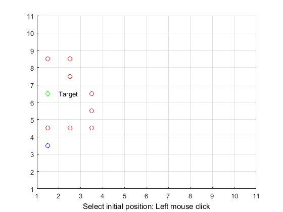
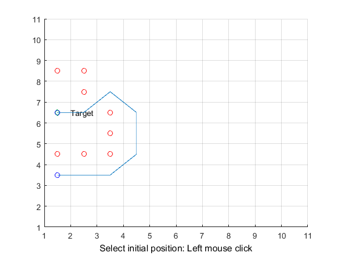

Contents
%%%%%%%%%%%%%%%%%%%%%%%%%%%%%%%%%%%%%%%%%%%%%%%%%%%%% % A* ALGORITHM Demo % 04-26-2005 Copyright 2009-2010 The MathWorks, Inc. % 15-01-2016 Rong Qu %%%%%%%%%%%%%%%%%%%%%%%%%%%%%%%%%%%%%%%%%%%%%%%%%%%%%
Matlab Basics
%{ % "MATLAB Overview" @ MathWorks % "Writing a Matlab Program" @ MathWorks % Choose your working folder, where all Astar files are saved % Understand step-by-step the source code, and start working on Coursework 1 %}
define the problem via GUI
problem(); % OBSTACLE: [X val, Y val] OBSTACLE = []; k = 1; for i = 1 : MAX_X for j = 1 : MAX_Y if(MAP(i, j) == -1) OBSTACLE(k, 1) = i; OBSTACLE(k, 2) = j; k = k + 1; end end end OBST_COUNT = size(OBSTACLE, 1); OBST_COUNT = OBST_COUNT + 1; OBSTACLE(OBST_COUNT, :) = [xStart, yStart];
add the starting node as the first node (root node) in QUEUE
QUEUE: [0/1, X val, Y val, Parent X val, Parent Y val, h(n), g(n), f(n)]
xNode = xStart; yNode = yStart; QUEUE = []; QUEUE_COUNT = 1; NoPath = 1; % assume there exists a path path_cost = 0; % cost g(n): start node to the current node n goal_distance = distance(xNode, yNode, xTarget, yTarget); % cost h(n): heuristic cost of n QUEUE(QUEUE_COUNT, :) = insert(xNode, yNode, xNode, yNode, path_cost, goal_distance, goal_distance); QUEUE(QUEUE_COUNT, 1) = 0; % What does this do?
Start the search
while((xNode ~= xTarget || yNode ~= yTarget) && NoPath == 1) % expand the current node to obtain child nodes exp = expand(xNode, yNode, path_cost, xTarget, yTarget, OBSTACLE, MAX_X, MAX_Y); exp_count = size(exp, 1); % Update QUEUE with child nodes; exp: [X val, Y val, h(n), g(n), f(n)] for i = 1 : exp_count flag = 0; for j = 1 : QUEUE_COUNT if(exp(i, 1) == QUEUE(j, 2) && exp(i, 2) == QUEUE(j, 3)) QUEUE(j, 8) = min(QUEUE(j, 8), exp(i, 5)); if QUEUE(j, 8) == exp(i, 5) % update parents, g(n) and h(n) QUEUE(j, 4) = xNode; QUEUE(j, 5) = yNode; QUEUE(j, 6) = exp(i, 3); QUEUE(j, 7) = exp(i, 4); end; % end of minimum f(n) check flag = 1; end; end; if flag == 0 QUEUE_COUNT = QUEUE_COUNT + 1; QUEUE(QUEUE_COUNT, :) = insert(exp(i, 1), exp(i, 2), xNode, yNode, exp(i, 3), exp(i, 4), exp(i, 5)); end; % end of insert new element into QUEUE end; % A*: find the node in QUEUE with the smallest f(n), returned by min_fn index_min_node = min_fn(QUEUE, QUEUE_COUNT); if (index_min_node ~= -1) % set current node (xNode, yNode) to the node with minimum f(n) xNode = QUEUE(index_min_node, 2); yNode = QUEUE(index_min_node, 3); path_cost = QUEUE(index_min_node, 6); % cost g(n) % move the node to OBSTACLE OBST_COUNT = OBST_COUNT + 1; OBSTACLE(OBST_COUNT, 1) = xNode; OBSTACLE(OBST_COUNT, 2) = yNode; QUEUE(index_min_node, 1) = 0; else NoPath = 0; % there is no path! end; end;
Output / plot your route
result();
Your Coursework 1 report
%{ % You could either % 1. Simply comparess a. all your program files and b. coursework report, or % 2. Compress a. published code, and b. coursework report % How to publish: "Writing a Matlab Program" @ MathWorks % %}